ม็อด Stardew Valley
ฉันกำลังทำส่วนเสริมของเกม Stardew Valley เพิ่มราฟาเอลเป็นตัวละครที่เกมควบคุม เขาเดินตามตารางของตัวเองทั่วเมือง และแวะพิพิธภัณฑ์ตามของที่ผู้เล่นบริจาค เขาเดินตามผู้เล่น พาไปยังจุดหมาย หรือมาหาได้ พร้อมบทพูดที่เข้ากับสถานการณ์ โหมดเดินตามยังอยู่ระหว่างปรับ
สรุปสั้น ๆ: ฉันออกแบบราฟาเอล กติกาพฤติกรรม และสไปรต์เดิน ส่วนเครื่องมือ AI เขียนโค้ดและร่างบท ตอนนี้กำลังทำอยู่
- ช่วงเวลา
- ปี 4 เทอม 1 (2026)
- ทีม / บทบาท
- ผู้ออกแบบและกำกับ (ตัวละคร ผังบ้านและลานหน้าบ้าน กติกาพฤติกรรม และตัดสินบทสุดท้าย) · เครื่องมือ AI เขียนโค้ดและร่างบท
- เครื่องมือ
- Stardew Valley 1.6 · SMAPI และ Content Patcher (เครื่องมือทำม็อด Stardew มาตรฐาน) · C# · พิกเซลอาร์ต · ม็อดตัดบรรทัดภาษาไทย (C#)
- สถานะ
- กำลังทำ
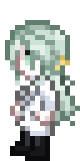
โจทย์
ทำให้ NPC หนึ่งตัวมีชีวิตที่ผู้เล่นมองเห็นได้ ไม่ใช่ตัวละครที่ยืนอยู่กับที่แล้วอ่านบท แต่มีกิจวัตรของตัวเองในแต่ละวัน ทำกิจกรรมกับผู้เล่นได้เมื่อผู้เล่นขอ และพูดให้เข้ากับสถานการณ์ อีกข้อคือระบบที่สร้างต้องนำไปใช้กับตัวละครอื่นได้ในภายหลัง
สิ่งที่ฉันตัดสินใจ
- แยกระบบพฤติกรรมออกจากข้อมูลตัวละคร ระบบพฤติกรรมใช้ Eternity Core ที่เขียนด้วย C# ส่วนข้อมูลแต่ละตัวอยู่ในแพ็ก Content Patcher จึงเพิ่มตัวละครใหม่ได้โดยใช้ระบบเดิม
- ราฟาเอลเป็นตัวละครที่ฉันสร้างเอง ฉันออกแบบตัวละครและนิสัยทั้งหมดของเขา รวมถึงเลือกดีไซน์และภาพ
- บ้านของเขา วางแผนก่อน ฉันออกแบบผังบ้านและลานหน้าบ้านของราฟาเอลเอง แบบนี้ยังอยู่ในขั้นออกแบบ ตอนนี้ในเกมจึงใช้บ้านชั่วคราวไปก่อน
- กติกาพฤติกรรมที่ชัดเจน NPC ทำทีละอย่าง และคำสั่งใหม่จะแทนที่คำสั่งเก่า
- ข้าวกล่องในวันที่ไปทำงานไกล วันที่ราฟาเอลไปทำงานนอกบ้าน เขาจะพกข้าวกล่องไปด้วย
- แผนต่อไป: ระบบปาร์ตี้ เพื่อนร่วมทางจะยืนล้อมรอบผู้เล่นแทนการเดินต่อแถว จะได้ไม่มีใครดูเหมือนถูกทิ้งไว้ข้างหลัง
- แก้การตัดบรรทัดภาษาไทยที่ระดับโค้ด ภาษาไทยไม่เว้นวรรคระหว่างคำ ฉันจึงเพิ่มม็อดตัดบรรทัดภาษาไทย (C#) ให้บทพูดขึ้นบรรทัดใหม่ตรงรอยต่อคำ
- คนตัดสินบทพูดคือฉัน ฉันตั้งกติกาของบท และเป็นคนตัดสินว่าจะเก็บหรือตัดบทพูดส่วนไหน
ผลลัพธ์
ที่ทำงานได้ในเกมตอนนี้:
- กิจวัตรประจำวันข้ามแมพ ราฟาเอลเดินตามตารางของตัวเองทั่วเมือง
- กิจวัตรที่อ่านสถานะเกม (จุดแวะพิพิธภัณฑ์ของเขาเปลี่ยนตามของที่ผู้เล่นบริจาค)
- เมนูหัวข้อสนทนาแบบกำหนดเองเพื่อเริ่มกิจกรรมกับเขา
- โหมดพาไป เขาพาผู้เล่นไปยังจุดหมาย พร้อมบทพูดที่เข้ากับสถานการณ์
- โหมดเดินตาม (ยังจูนอยู่)
- โหมดมาหา เขามาหาผู้เล่นเอง
- ไอเท็มที่ทำขึ้นเอง (Eternity Goods แพ็กไอเท็มใหม่ของม็อด)
- บทพูดภาษาไทยเพิ่มเติมของชาวเมือง ตามสภาพอากาศ ฤดู วัน และสถานที่ โดยม็อดตัดบรรทัดจัดการการขึ้นบรรทัดภาษาไทย
- การทดสอบอัตโนมัติในเกม 224 รายการ (รอบล่าสุด: ผ่าน 192 ไม่ผ่าน 6 ข้าม 26) ใน 6 ข้อที่ไม่ผ่าน มี 3 ข้อเป็นกรณีโหมดเดินตามที่ยังจูนอยู่
ยังทำต่ออยู่
ในเกม
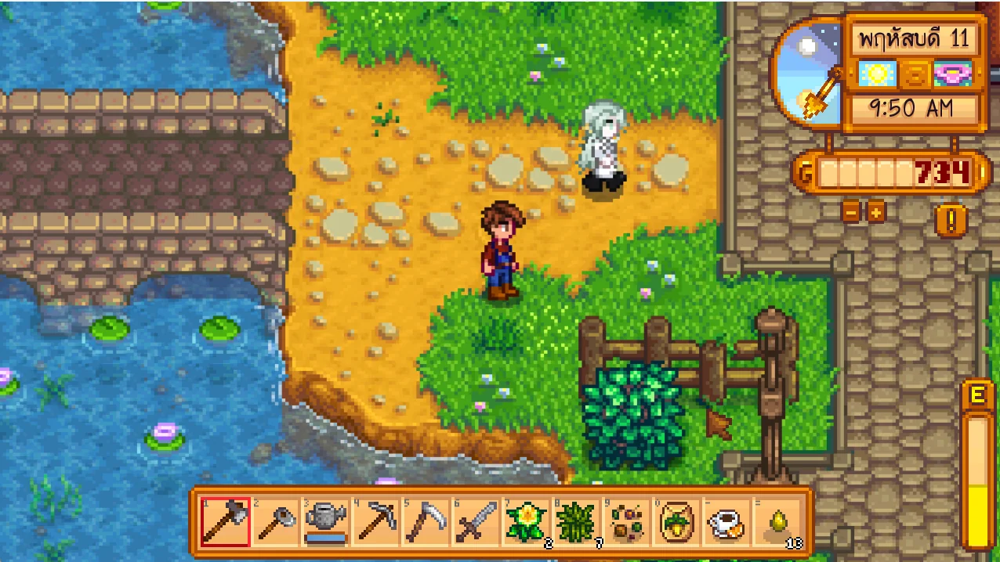
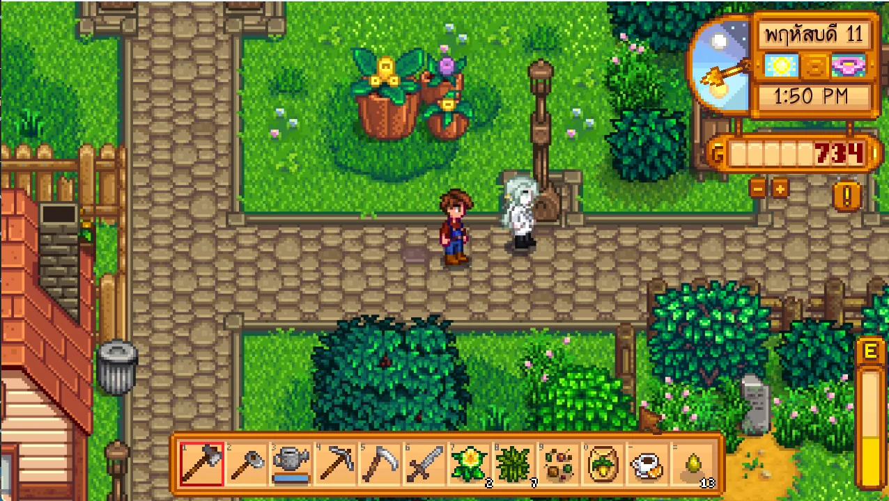
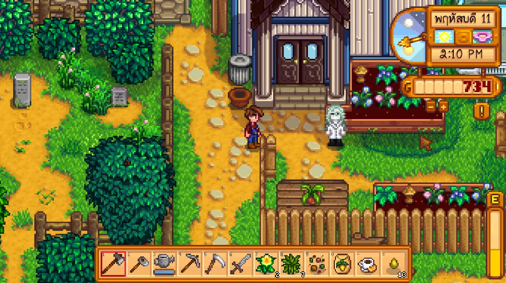
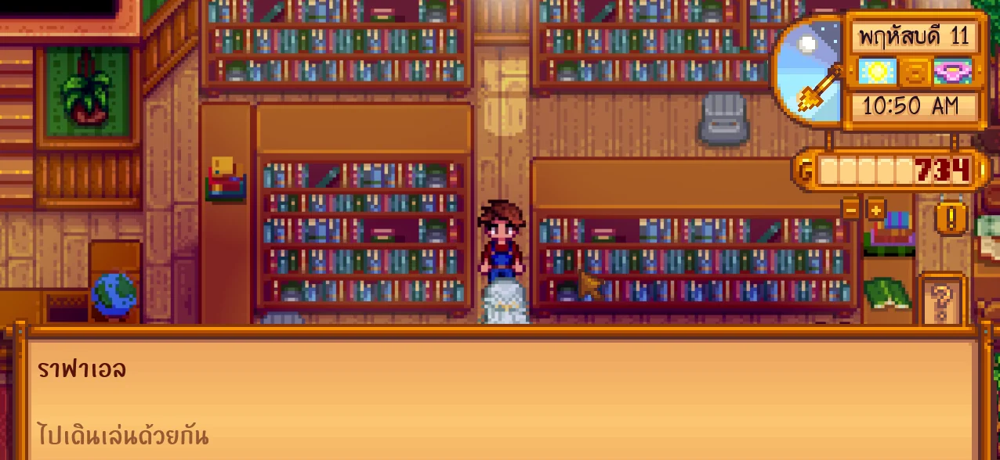
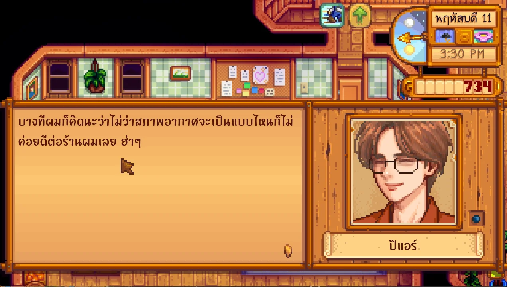
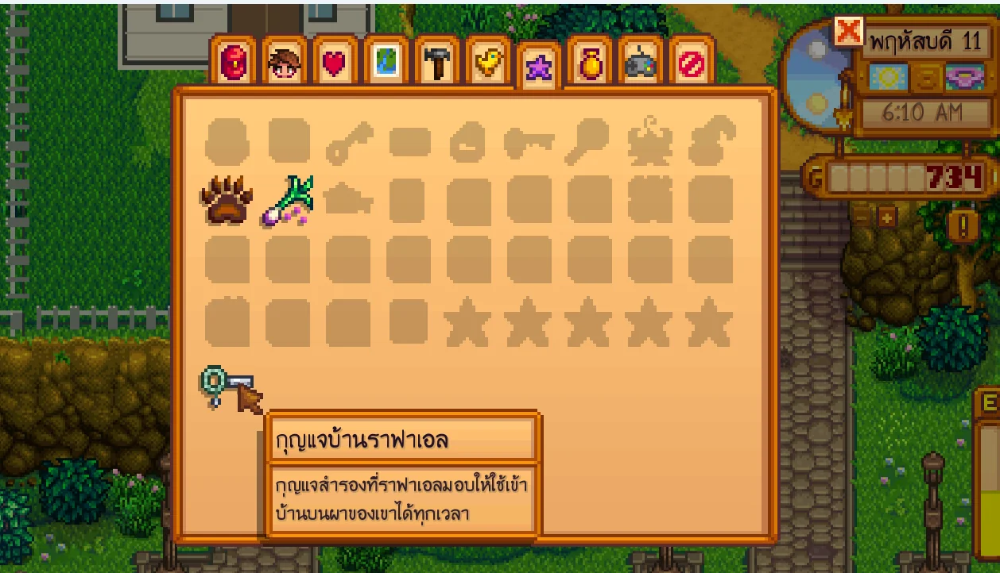
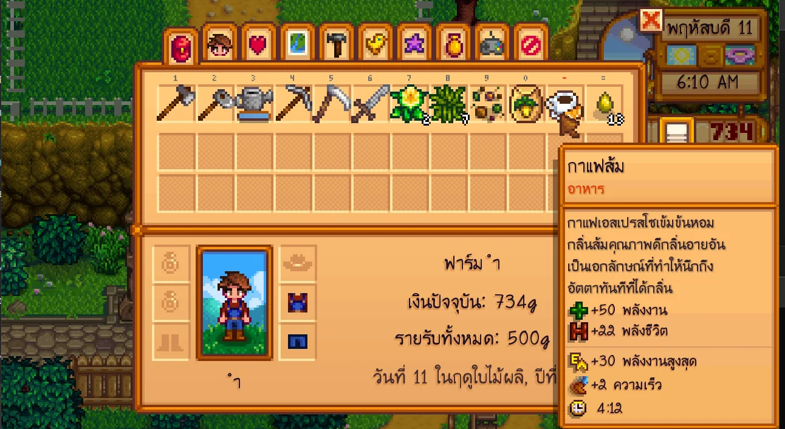
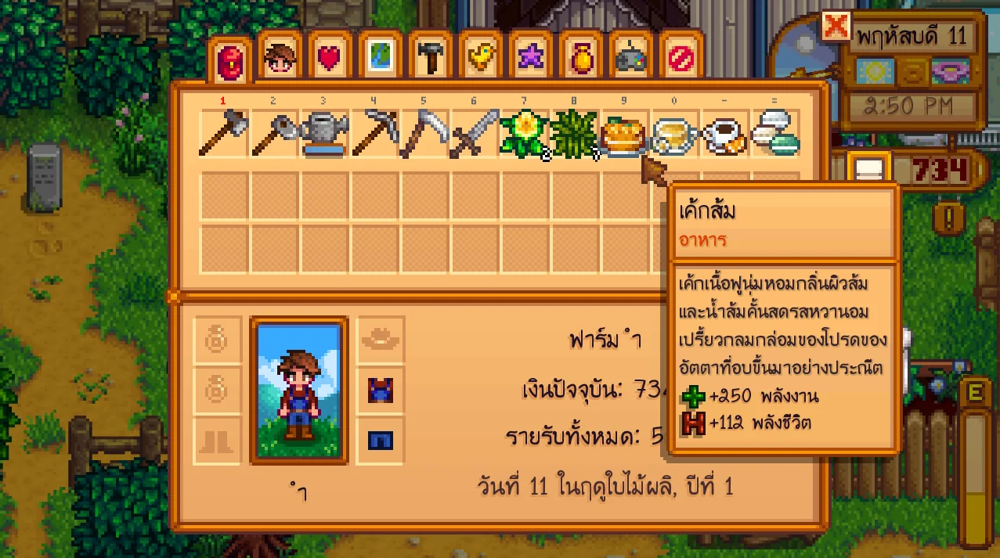
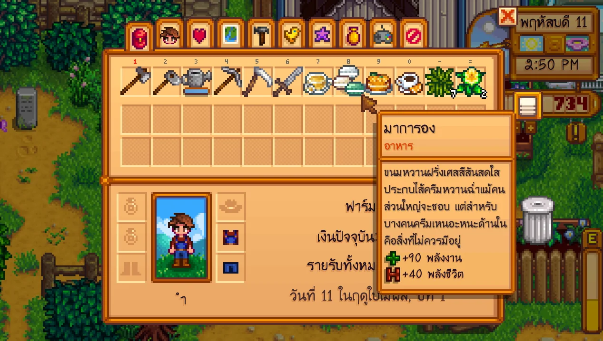
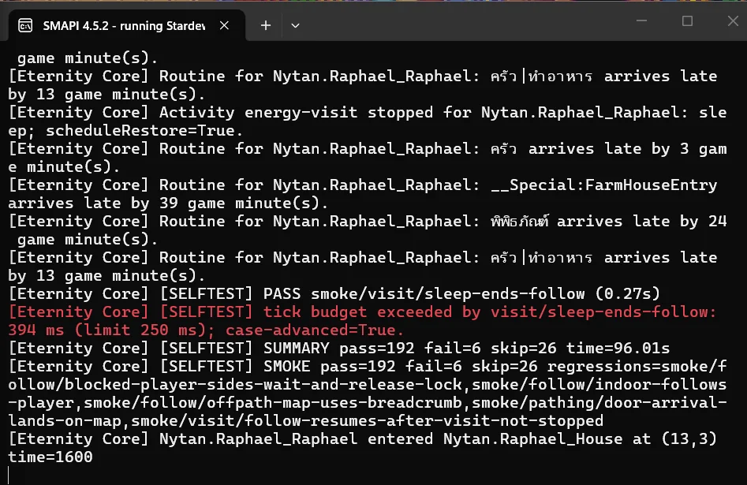
ขั้นออกแบบ (ก่อนสร้าง)
การวางแผนที่ทำก่อนสร้างแมพและตารางเวลา ภาพเหล่านี้เป็นเครื่องมือออกแบบ ไม่ใช่ภาพจากในเกม
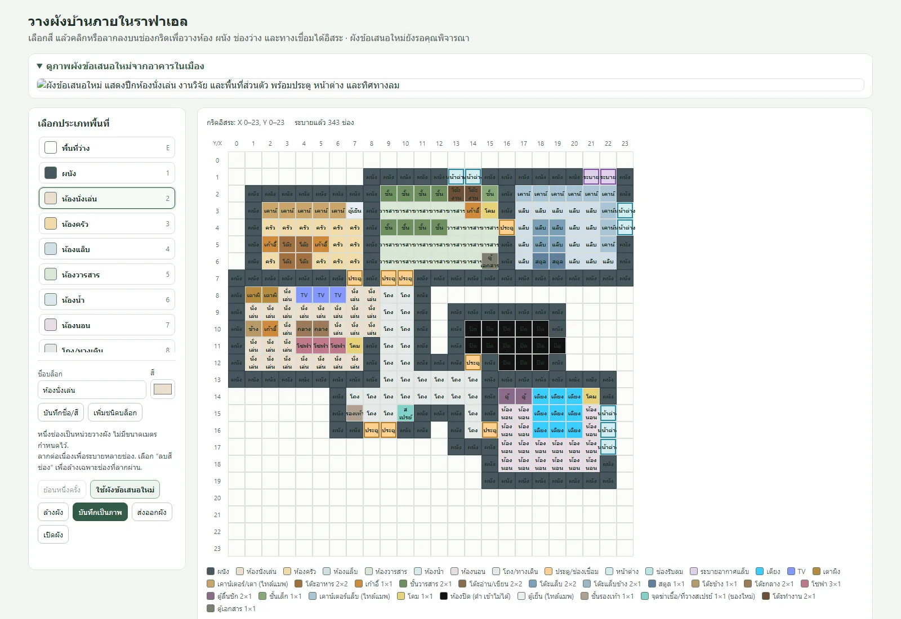
ส่วนของฉันกับ AI
ฉัน: ดีไซน์และนิสัยของราฟาเอล ผังบ้านและลานหน้าบ้าน กติกาพฤติกรรมของ NPC การเลือกดีไซน์และภาพ และการตัดสินว่าบทไหนเก็บหรือตัด เครื่องมือ AI: โค้ดและร่างบท